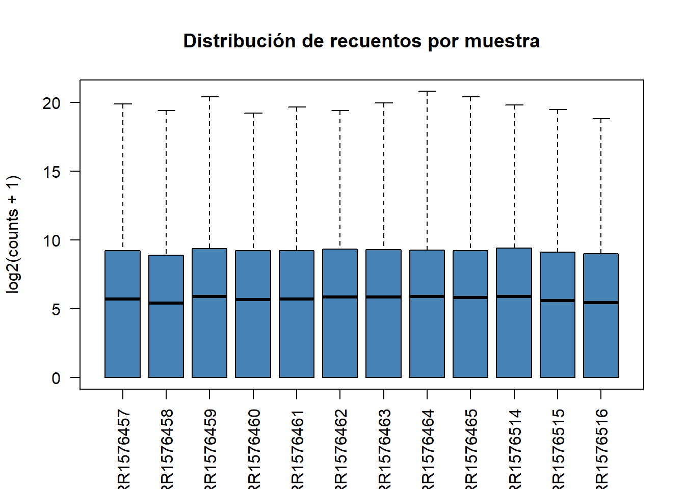
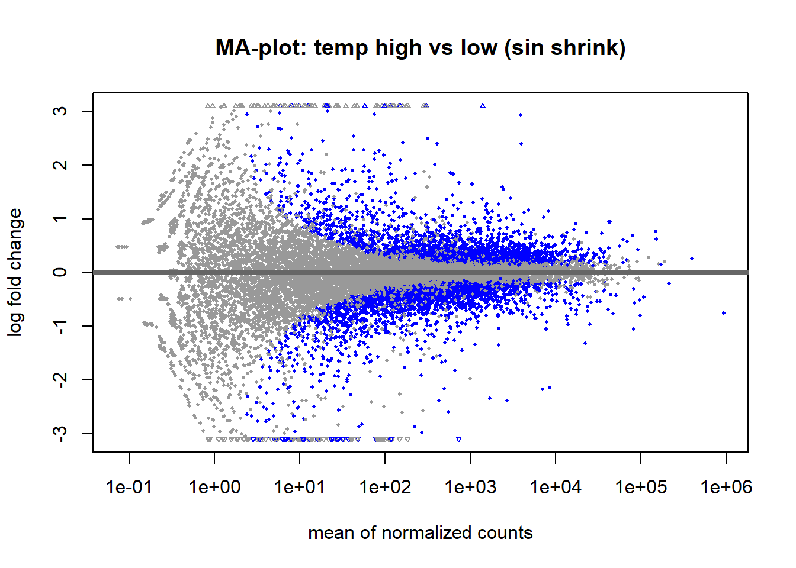
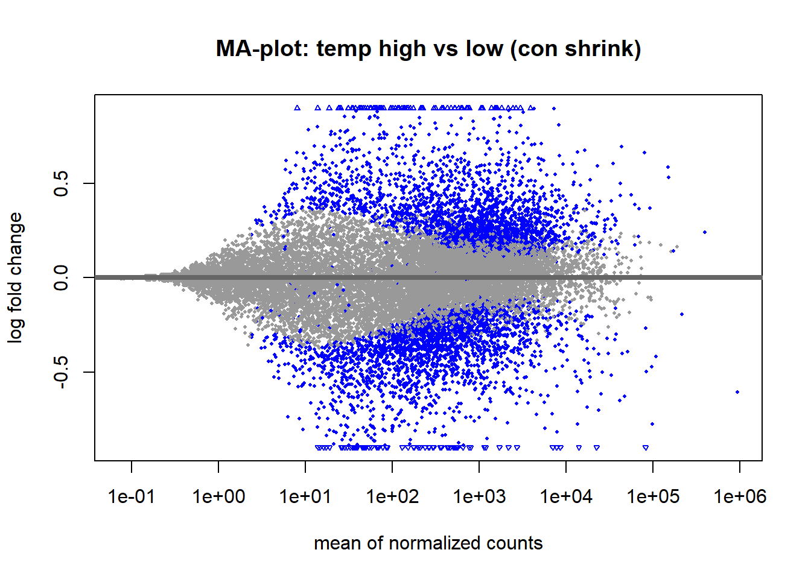
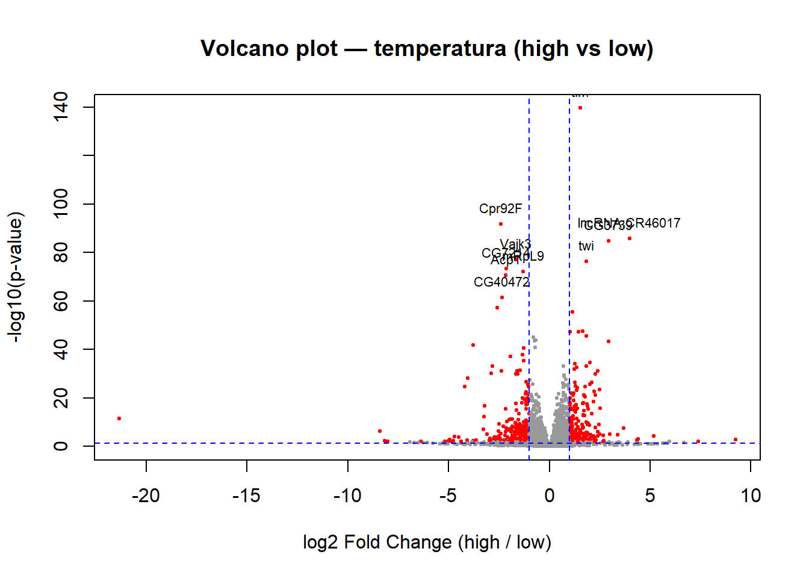
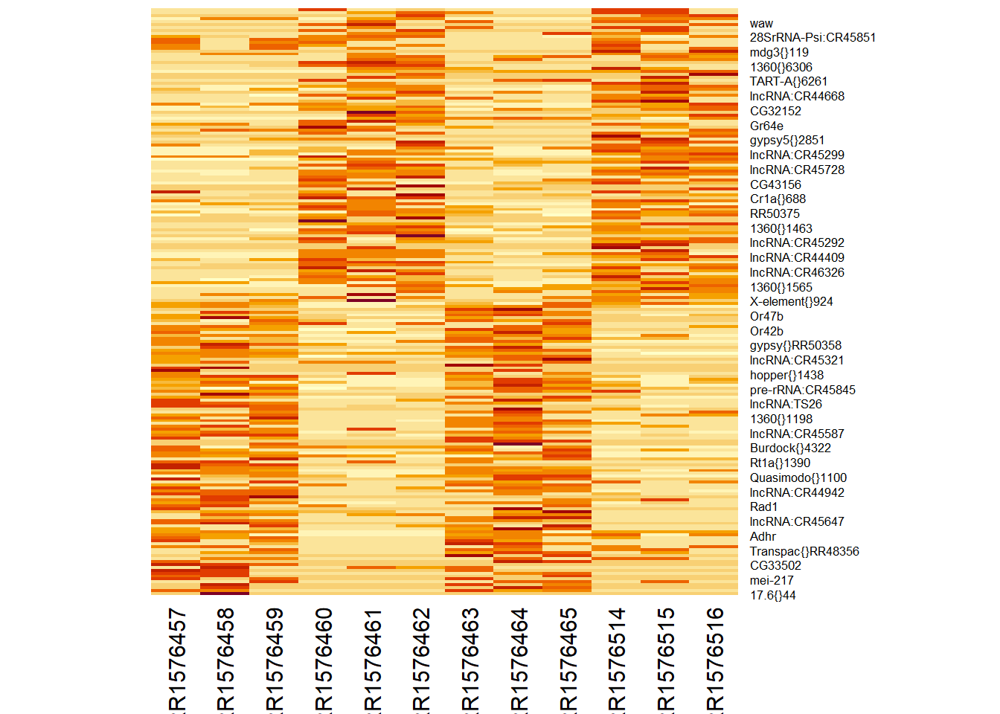

muestras <- read.table('~/Bioinformatica/data/Practica12/dme_elev_samples.tsv', header = TRUE)
genex <- read.table('~/Bioinformatica/data/Practica12/salmon.merged.gene_counts.tsv',
header = TRUE)Practica12
Ejercicio 1
1.1 Añadir columna pop_temp con población y temperatura unidas por _
muestras$pop_temp <- paste(muestras$population, muestras$temp, sep = "_")
muestras sample population temp pop_temp
1 SRR1576457 maine low maine_low
2 SRR1576458 maine low maine_low
3 SRR1576459 maine low maine_low
4 SRR1576460 maine high maine_high
5 SRR1576461 maine high maine_high
6 SRR1576462 maine high maine_high
7 SRR1576463 panama low panama_low
8 SRR1576464 panama low panama_low
9 SRR1576465 panama low panama_low
10 SRR1576514 panama high panama_high
11 SRR1576515 panama high panama_high
12 SRR1576516 panama high panama_high1.2 Número total de lecturas por muestra
# Las columnas 3:14 son las 12 muestras; las dos primeras son gene_id y gene_name
totales <- colSums(genex[, 3:14])
totalesSRR1576457 SRR1576458 SRR1576459 SRR1576460 SRR1576461 SRR1576462 SRR1576463
28252778 21565448 29471559 27692134 26953900 29368135 29706071
SRR1576464 SRR1576465 SRR1576514 SRR1576515 SRR1576516
26757043 26596118 30950499 25563787 24401671 summary(totales) Min. 1st Qu. Median Mean 3rd Qu. Max.
21565448 26338035 27323017 27273262 29393991 30950499 Las 12 genotecas tienen tamaños bastante iguales (del orden de varios millones de lecturas cada una).
1.3 ¿Los recuentos tienen distribuciones parecidas entre muestras?
# Boxplot de log2(counts + 1) para comparar distribuciones
boxplot(log2(genex[, 3:14] + 1),
las = 2, col = "steelblue",
ylab = "log2(counts + 1)",
main = "Distribución de recuentos por muestra")
Las cajas son muy similares: la mediana, el rango y los bigotes están a la misma altura en todas las muestras. Esto indica que la composición global de los recuentos es comparable entre genotecas.
1.4 ¿Cuántos genes no se expresan en absoluto en ninguna muestra?
no_expresados <- sum(rowSums(genex[, 3:14]) == 0)
no_expresados[1] 4722cat("Porcentaje:", round(100 * no_expresados / nrow(genex), 1), "%\n")Porcentaje: 19.5 %No se expresan 4722 genes (19,5%).
Construcción del DESeqDataSet
muestras <- read.table('~/Bioinformatica/data/Practica12/dme_elev_samples.tsv',
header = TRUE)
genex <- read.table('~/Bioinformatica/data/Practica12/salmon.merged.gene_counts.tsv',
header = TRUE)Preparación de los objetos para DESeq2
# --- muestras ---
row.names(muestras) <- muestras$sample
muestras$sample <- NULL
muestras$population <- factor(muestras$population, levels = c('maine', 'panama'))
muestras$temp <- factor(muestras$temp, levels = c('low', 'high'))
# --- genex (a matriz entera) ---
row.names(genex) <- genex$gene_name
genex$gene_name <- NULL
genex$gene_id <- NULL
genex <- round(as.matrix(genex))
# Comprobaciones
class(genex)[1] "matrix" "array" dim(genex)[1] 24254 12head(genex[, 1:3]) SRR1576457 SRR1576458 SRR1576459
7SLRNA:CR32864 478 0 245
a 653 483 691
abd-A 536 414 563
Abd-B 615 562 703
Abl 1855 1382 1941
abo 242 205 272suppressPackageStartupMessages(library(DESeq2))
dds1 <- DESeqDataSetFromMatrix(
countData = genex,
colData = muestras,
design = ~ population + temp
)converting counts to integer modedds1class: DESeqDataSet
dim: 24254 12
metadata(1): version
assays(1): counts
rownames(24254): 7SLRNA:CR32864 a ... RR51477 Bari1{}RR51478
rowData names(0):
colnames(12): SRR1576457 SRR1576458 ... SRR1576515 SRR1576516
colData names(2): population tempPrefiltrado y análisis de expresión diferencial
keep <- rowSums(counts(dds1)) > 0
dds1 <- dds1[keep, ]# Análisis
dds1 <- DESeq(dds1)estimating size factorsestimating dispersionsgene-wise dispersion estimatesmean-dispersion relationshipfinal dispersion estimatesfitting model and testing# Tabla de resultados
res <- results(dds1)
reslog2 fold change (MLE): temp high vs low
Wald test p-value: temp high vs low
DataFrame with 19508 rows and 6 columns
baseMean log2FoldChange lfcSE stat pvalue
<numeric> <numeric> <numeric> <numeric> <numeric>
7SLRNA:CR32864 346.333 0.5918974 1.3301901 0.444972 0.656339979
a 555.596 -0.2730041 0.0718487 -3.799710 0.000144866
abd-A 531.996 -0.0286785 0.0789218 -0.363379 0.716321732
Abd-B 634.760 -0.1083918 0.0771241 -1.405421 0.159896272
Abl 1654.842 -0.1328055 0.0746580 -1.778851 0.075264257
... ... ... ... ... ...
RR51007 4.90906 3.8596869 2.972471 1.2984773 1.94123e-01
RR51048 16.60710 -0.8973071 0.341603 -2.6267541 8.62036e-03
RR51093 36.93279 0.0660523 1.685323 0.0391927 9.68737e-01
RR51475 159.62678 -2.6058194 1.875172 -1.3896429 1.64637e-01
RR51477 70.83394 1.6927986 0.192437 8.7966392 1.40975e-18
padj
<numeric>
7SLRNA:CR32864 0.81170166
a 0.00154573
abd-A 0.85146289
Abd-B 0.33849217
Abl 0.20046220
... ...
RR51007 3.82417e-01
RR51048 4.01745e-02
RR51093 9.84464e-01
RR51475 3.44815e-01
RR51477 2.06427e-16Ejercicio 3 — Contrastes y resumen
3.1 Tabla de resultados para el contraste entre poblaciones
Mirando ?results, hay dos formas equivalentes. La más explícita:
resPop <- results(dds1, contrast = c("population", "panama", "maine"))
resPoplog2 fold change (MLE): population panama vs maine
Wald test p-value: population panama vs maine
DataFrame with 19508 rows and 6 columns
baseMean log2FoldChange lfcSE stat pvalue
<numeric> <numeric> <numeric> <numeric> <numeric>
7SLRNA:CR32864 346.333 -0.2116106 1.3301901 -0.159083 0.8736035
a 555.596 -0.1114459 0.0718333 -1.551452 0.1207935
abd-A 531.996 0.0460822 0.0789226 0.583891 0.5592939
Abd-B 634.760 -0.0424386 0.0771227 -0.550274 0.5821315
Abl 1654.842 -0.1477705 0.0746581 -1.979298 0.0477825
... ... ... ... ... ...
RR51007 4.90906 2.118240 2.970241 0.713154 0.475750370
RR51048 16.60710 -1.274560 0.344507 -3.699659 0.000215889
RR51093 36.93279 -0.886468 1.685327 -0.525992 0.598893951
RR51475 159.62678 0.121496 1.875169 0.064792 0.948339648
RR51477 70.83394 -0.187567 0.188818 -0.993376 0.320526881
padj
<numeric>
7SLRNA:CR32864 0.966480
a 0.449954
abd-A 0.838008
Abd-B 0.850233
Abl 0.288737
... ...
RR51007 0.79163008
RR51048 0.00812377
RR51093 0.85672953
RR51475 0.98600817
RR51477 0.678118813.2 Resumen de cada contraste
cat("=== Contraste temperatura (high vs low) ===\n")=== Contraste temperatura (high vs low) ===summary(res)
out of 19508 with nonzero total read count
adjusted p-value < 0.1
LFC > 0 (up) : 2418, 12%
LFC < 0 (down) : 2336, 12%
outliers [1] : 90, 0.46%
low counts [2] : 3018, 15%
(mean count < 2)
[1] see 'cooksCutoff' argument of ?results
[2] see 'independentFiltering' argument of ?resultscat("\n=== Contraste población (panama vs maine) ===\n")
=== Contraste población (panama vs maine) ===summary(resPop)
out of 19508 with nonzero total read count
adjusted p-value < 0.1
LFC > 0 (up) : 623, 3.2%
LFC < 0 (down) : 634, 3.2%
outliers [1] : 90, 0.46%
low counts [2] : 3018, 15%
(mean count < 2)
[1] see 'cooksCutoff' argument of ?results
[2] see 'independentFiltering' argument of ?results3.3 ¿Cuál es la tasa de falsos positivos (FDR)?
Por defecto, results() aplica un umbral alpha = 0.1, es decir, el FDR por defecto es del 10 %. Si quisiéramos que fuese más estricto, podemos pedir alpha = 0.05:
res05 <- results(dds1, alpha = 0.05)
resPop05 <- results(dds1, contrast = c("population", "panama", "maine"),
alpha = 0.05)
summary(res05)
out of 19508 with nonzero total read count
adjusted p-value < 0.05
LFC > 0 (up) : 1931, 9.9%
LFC < 0 (down) : 1878, 9.6%
outliers [1] : 90, 0.46%
low counts [2] : 3018, 15%
(mean count < 2)
[1] see 'cooksCutoff' argument of ?results
[2] see 'independentFiltering' argument of ?resultssummary(resPop05)
out of 19508 with nonzero total read count
adjusted p-value < 0.05
LFC > 0 (up) : 420, 2.2%
LFC < 0 (down) : 478, 2.5%
outliers [1] : 90, 0.46%
low counts [2] : 3018, 15%
(mean count < 2)
[1] see 'cooksCutoff' argument of ?results
[2] see 'independentFiltering' argument of ?resultsGráficas
# MA-plot del contraste temperatura
plotMA(res, main = "MA-plot: temp high vs low (sin shrink)")
Shrinkage de los log fold changes
resShrink <- lfcShrink(dds1, coef = 'temp_high_vs_low', type = 'normal')using 'normal' for LFC shrinkage, the Normal prior from Love et al (2014).
Note that type='apeglm' and type='ashr' have shown to have less bias than type='normal'.
See ?lfcShrink for more details on shrinkage type, and the DESeq2 vignette.
Reference: https://doi.org/10.1093/bioinformatics/bty895plotMA(resShrink, main = "MA-plot: temp high vs low (con shrink)")
Tras la contracción, los genes de baja expresión dejan de mostrar log fold changes inflados artificialmente y la nube de puntos se condensa hacia 0.
Ejercicio 4 — Volcano plot
#No me estaba saliendo, le he pedido ayuda a gemini
# Quitamos NAs y preparamos vectores
if (!exists("res")) {
res <- results(dds1)}
#En este paso ayuda de gemini:
vol <- as.data.frame(res)
vol <- vol[!is.na(vol$pvalue) & !is.na(vol$padj), ]
#padj < 0.05 Y |log2FC| > 1
vol$signif <- vol$padj < 0.05 & abs(vol$log2FoldChange) > 1
with(vol, plot(log2FoldChange, -log10(pvalue),
pch = 20, cex = 0.6,
col = ifelse(signif, "red", "grey60"),
xlab = "log2 Fold Change (high / low)",
ylab = "-log10(p-value)",
main = "Volcano plot — temperatura (high vs low)"))
abline(v = c(-1, 1), lty = 2, col = "blue")
abline(h = -log10(0.05), lty = 2, col = "blue")
# Etiquetar los 10 genes más significativos
top10 <- head(vol[order(vol$padj), ], 10)
text(top10$log2FoldChange, -log10(top10$pvalue),
labels = rownames(top10), cex = 0.7, pos = 3)
Lo que muestra: cada punto es un gen, posicionado por su magnitud de cambio (eje X) y su significación estadística (eje Y). Los puntos en rojo son los genes diferencialmente expresados con padj < 0.05 y |log2FC| > 1. Cuanto más alejado de (0,0), más interesante supongo.
Extracción de datos transformados y heatmap
dds2 <- vst(dds1)
NormCounts <- assay(dds2)
res <- res[!is.na(res$pvalue), ]
res <- res[order(res$log2FoldChange), ]
heatmap(NormCounts[c(head(row.names(res), 100),
tail(row.names(res), 100)), ],
Rowv = NA, Colv = NA)
#main = "Top 100 down + Top 100 up (sin clustering)")Ejercicio 5 — Explicación del bloque del heatmap
El código hace cuatro cosas::
res <- res[!is.na(res$pvalue), ]elimina de la tabla de resultados los genes para los que DESeq2 no pudo calcular un p-valor.res <- res[order(res$log2FoldChange), ]reordena la tabla de menor a mayorlog2FoldChange. Tras esto, los primeros genes son los más reprimidos enhigh(los que más se sobreexpresan enlow) y los últimos son los más inducidos enhigh.head(row.names(res), 100)ytail(row.names(res), 100)seleccionan los 100 genes en cada extremo, es decir, los 200 genes con mayor cambio de expresión entre los dos tratamientos de temperatura.heatmap(NormCounts[..., ], Rowv = NA, Colv = NA)dibuja un heatmap con esos 200 genes (filas) y las 12 muestras (columnas), usando los recuentos transformados convst()para que sean comparables. LosRowv = NAyColv = NAdesactivan el clustering, conservando el orden que ya impusimos (por log fold change en filas, y por la posición original en columnas). El patrón de expresión cambia desde los genes “más down” hasta los “más up” entre los grupos de muestras.
Ejercicio 6 (ayudado por gemini)
6.1 ¿Se sobreexpresan más genes en temperatura baja que en alta?
# Contraste high vs low, con FDR del 5 %
res05 <- results(dds1, alpha = 0.05)
res05_ok <- res05[!is.na(res05$padj), ]
up_high <- sum(res05_ok$padj < 0.05 & res05_ok$log2FoldChange > 1)
up_low <- sum(res05_ok$padj < 0.05 & res05_ok$log2FoldChange < -1)
cat("Sobreexpresados en HIGH (log2FC > +1):", up_high, "\n")Sobreexpresados en HIGH (log2FC > +1): 230 cat("Sobreexpresados en LOW (log2FC < -1):", up_low, "\n")Sobreexpresados en LOW (log2FC < -1): 249 if (up_low > up_high) {
cat("\n=> Se CONFIRMA la conclusión de limma: hay más genes inducidos en LOW.\n")
} else {
cat("\n=> NO se confirma la conclusión de limma.\n")
}
=> Se CONFIRMA la conclusión de limma: hay más genes inducidos en LOW.# 6.2 Comparación de los 10 genes top de limma
genes_limma <- c("Cpr92F", "Vajk3", "lncRNA:CR46017",
"CG7214", "CG3739", "Acp1")
mi_tabla <- as.data.frame(res05)
comp <- mi_tabla[rownames(mi_tabla) %in% genes_limma,
c("log2FoldChange", "pvalue", "padj")]
# Añadimos columnas con los valores de limma para comparar lado a lado
limma_lfc <- c(Cpr92F = 2.47, Vajk3 = 1.68,
`lncRNA:CR46017` = -3.97, CG7214 = 2.20,
CG3739 = -2.87, Acp1 = 2.23)
comp$limma_lfc <- limma_lfc[rownames(comp)]
comp$signo_coincide <- sign(comp$log2FoldChange) == sign(comp$limma_lfc)
comp$significativo <- !is.na(comp$padj) & comp$padj < 0.05
comp log2FoldChange pvalue padj limma_lfc
Acp1 -2.173942 2.312889e-71 4.214597e-68 2.23
Vajk3 -1.654235 1.027009e-77 3.368590e-74 1.68
CG7214 -2.145943 5.024081e-74 1.177070e-70 2.20
CG3739 2.933537 1.869634e-85 7.665501e-82 -2.87
Cpr92F -2.391260 1.713739e-92 1.405266e-88 2.47
lncRNA:CR46017 3.979874 1.477465e-86 8.076809e-83 -3.97
signo_coincide significativo
Acp1 FALSE TRUE
Vajk3 FALSE TRUE
CG7214 FALSE TRUE
CG3739 FALSE TRUE
Cpr92F FALSE TRUE
lncRNA:CR46017 FALSE TRUELos 6 genes top de limma no coinciden en signo pero son altamente significativos en DESeq2.